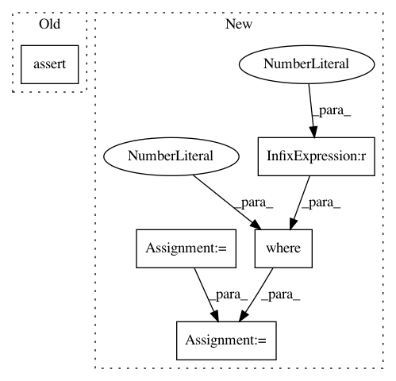

ab81795ef9a23a0e8c49f94bf5b44b4fb153f869,dipy/reconst/tests/test_shm.py,,test_real_sph_harm_fibernav,#,131
Before Change
cos(2. * pi / 4.) *
sin(pi / 3.) ** 2. *
(7. * cos(pi / 3.) ** 2. - 1) * sqrt(2))
assert_array_almost_equal(rsh(4, 4, pi / 8., pi / 6.),
(3. / 16.) * sqrt(35. / (2. * pi)) *
sin(0 + 4. * pi / 8.) * sin(pi / 6.) ** 4. *
sqrt(2))
assert_array_almost_equal(rsh(-4, 4, pi / 8., pi / 6.),
(3. / 16.) * sqrt(35. / (2. * pi)) *
cos(4. * pi / 8.) * sin(pi / 6.) ** 4. *
sqrt(2))
After Change
new_order = [0, 5, 4, 3, 2, 1, 14, 13, 12, 11, 10, 9, 8, 7, 6]
sphere = hemi_icosahedron.subdivide(2)
basis, m, n = real_sph_harm_mrtrix(4, sphere.theta, sphere.phi)
expected = basis[:, new_order]
expected *= np.where(m == 0, 1., np.sqrt(2))
fibernav_basis, m, n = real_sph_harm_fibernav(4, sphere.theta, sphere.phi)
assert_array_almost_equal(fibernav_basis, expected)
In pattern: SUPERPATTERN
Frequency: 3
Non-data size: 5
Instances
Project Name: nipy/dipy
Commit Name: ab81795ef9a23a0e8c49f94bf5b44b4fb153f869
Time: 2013-02-25
Author: mrbago@gmail.com
File Name: dipy/reconst/tests/test_shm.py
Class Name:
Method Name: test_real_sph_harm_fibernav
Project Name: ilastik/ilastik
Commit Name: 5ec7c3abfb74a4425a201b49bb814f343d246e15
Time: 2014-04-24
Author: webmaster@burgerdev.de
File Name: tests/test_applets/thresholdTwoLevels/testOpGraphcutSegment.py
Class Name: TestOpObjectsSegment
Method Name: testComplete
Project Name: ilastik/ilastik
Commit Name: 5ec7c3abfb74a4425a201b49bb814f343d246e15
Time: 2014-04-24
Author: webmaster@burgerdev.de
File Name: tests/test_applets/thresholdTwoLevels/testOpGraphcutSegment.py
Class Name: TestOpObjectsSegment
Method Name: testCC